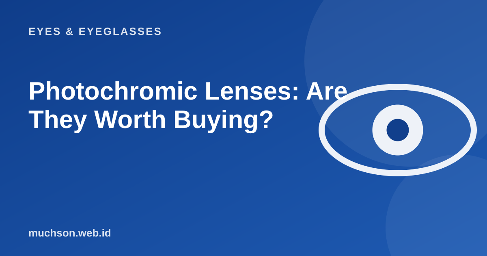

Home › Articles › Eyes & Eyeglasses
Eyes & EyeglassesPhotochromic Lenses: Are They Worth Buying?
One pair of glasses that is clear indoors and darkens by itself outside sounds ideal. It is convenient, but there are limits you should know about before paying extra. Here is an honest explanation.

How it works
Photochromic lenses contain molecules that change structure when they are hit by ultraviolet (UV) light. The new structure absorbs more light, so the lens looks dark. When the UV goes away, the molecules return to their original form and the lens becomes clear again. The process is not instant: they darken fairly quickly, in seconds to minutes, and fading back is usually slower.
Text description of the diagram
- Indoors: the lens is clear
- Out into the sun: UV hits the lens
- The lens darkens: reducing glare
- Back inside: it slowly clears again
Limits that are often missed
- They do not darken inside a car. A car windscreen filters most UV, so the lens hardly changes while you drive.
- Temperature matters. In hot weather the lens tends to be less dark and slower to darken than in cold weather.
- Not as dark as full sunglasses. They suit mild to moderate glare, but are not necessarily enough for extreme glare.
- They fade after years. The ability to change colour declines with use.
- A higher price than ordinary lenses.
Who benefits most?
Photochromic lenses are not a substitute for eye protection from extreme glare such as at the beach or on snow. For those conditions, use suitable sunglasses.